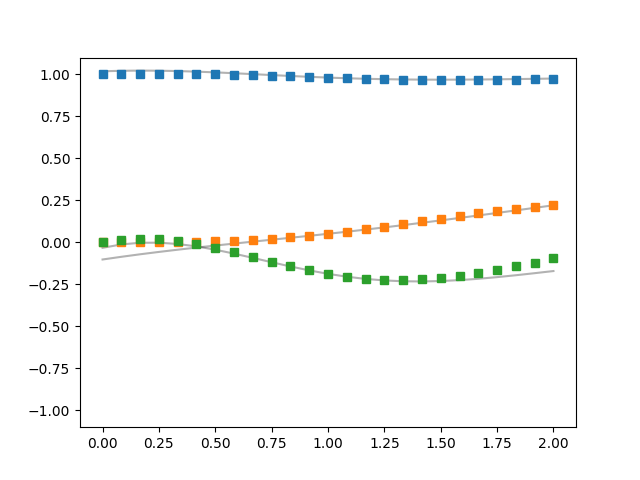

Note
Click here to download the full example code
Introduction to the LFM Mix Model¶
- 
import numpy as np
import matplotlib.pyplot as plt
from pydygp.linlatentforcemodels import MLFMMixSA
from sklearn.gaussian_process.kernels import RBF
from pydygp.liealgebras import so
np.set_printoptions(precision=3, suppress=True)
mlfm = MLFMMixSA(so(3), R=1, order=1, lf_kernels=[RBF(), ])
x0 = np.eye(3) # initial conditions the std. basis vectors of R3
N_outputs = 3
beta = np.random.normal(size=6).reshape(2, 3)
beta /= np.linalg.norm(beta, axis=1)[:, None]
tt = np.linspace(0., 2., 25)
Data, gtrue = mlfm.sim(x0, tt, beta=beta, size=N_outputs)
mlfm._setup_times([tt]*N_outputs, h=None)
# set the fixed points
_ifix = np.linspace(0, tt.size-1, 5, dtype=np.intp)[1:-1]
ifix = [mlfm.data_inds[0][i] for i in _ifix]
for _ifx, ifx in zip(_ifix, ifix):
initval = np.array([y[_ifx, :] for y in Data])
layer = mlfm._forward(gtrue[0](mlfm.ttc),
beta, initval, ifx)
fig, ax = plt.subplots()
ax.plot(mlfm.ttc, layer[..., 0], 'k-', alpha=0.3)
ax.plot(tt, Data[0], 's')
ax.set_ylim((-1.1, 1.1))
plt.show()
Total running time of the script: ( 0 minutes 0.065 seconds)